Demag GUI
Contents
Demag GUI#
The Demag GUI (demag_gui.py) program enables the display and analysis of paleomagnetic demagnetization data. The software will display specimen level data within the chosen directory as a Zijderveld plot, equal area plot and intensity plot. Interpretations can be made to the data as least-squares line or plane fits. Mean directions can be calculated and displayed for these interpretations. These interpretations can be exported as MagIC tables.
Launching#
The best way to launch the Demag GUI application is through Pmag GUI. If you have installed PmagPy using pip, (or completed a developer install), you can run ‘pmag_gui.py’ at the command line to launch it. Anaconda users will instead use ‘pmag_gui_anaconda’.
To use Demag GUI, you must have a MagIC format measurements file. You can convert other lab formats to MagIC format within Pmag GUI. Click through step 1 in Pmag GUI to import all of your files and then combine them into a ‘measurements.txt’ file (and possibly specimen, sample, site, and location files as well). Once you have converted all of your files, click on the Demag GUI button in Pmag GUI.
If you want to launch Demag GUI directly, (assuming PmagPy was properly installed using pip or developer install), you can simply type ‘demag_gui.py’ at the command line. Anaconda users will type ‘demag_gui_anaconda’ instead.
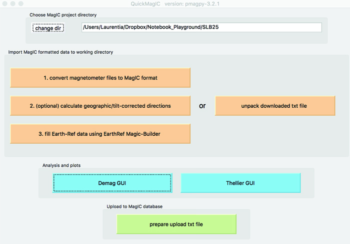can also be launched through the command line by navigating to the directory containing
demag_gui.py
and running it with:
% python ./demag_gui.py
Adding and Editing Specimen Interpretations:#
To add a new fit, click the ‘add fit’ button (hotkey: ctrl-n). (For Mac users, all hotkeys use the Command button instead of Ctrl.) If no fit has yet been created for the current specimen, you add a new fit by double clicking on two measurements in the list of measurements to the left, or by double clicking on the data points on the zijderveld plot. You can manage multiple fits for the same specimen, switching between them using the drop-down-menu under the add fit button. Once you have selected a fit, the shape of the end points of the selected fit will turn to diamond shapes on all plots to distinguish them from the other data points. It is also possible to add interpretations in mass using the interpretation editor tool described below.
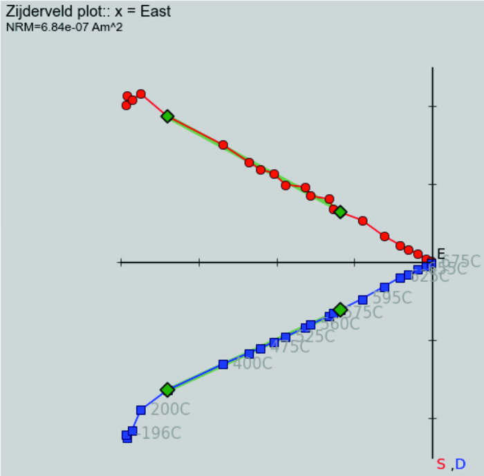{kind=link}
Once the desired fit is selected, its bounds can be edited using the drop-down boxes under the bounds header.
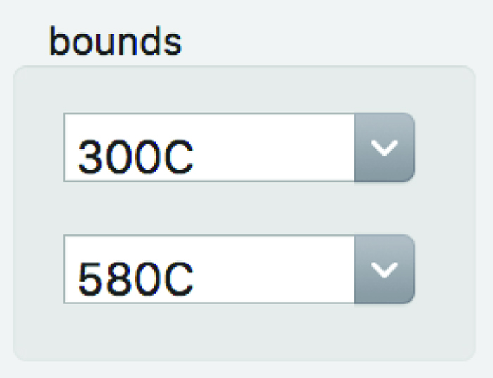{kind=link}
Another way to edit bounds is to double-click the list of measurement steps in the list on the left. The included steps in the currently selected interpretation are highlighted blue on the measurement list and the measurements marked “bad” are highlighted red. Bad measurements can be marked and unmarked by right clicking on them (this change takes a moment to appear, see more details below). In the case of duplicate measurements, the first
good
measurement with the same treatment is used as a bound. All points between the selected bounds that are flagged good (i.e. not flagged bad and marked in red), including duplicate measurements, will be included in the interpreted fit.
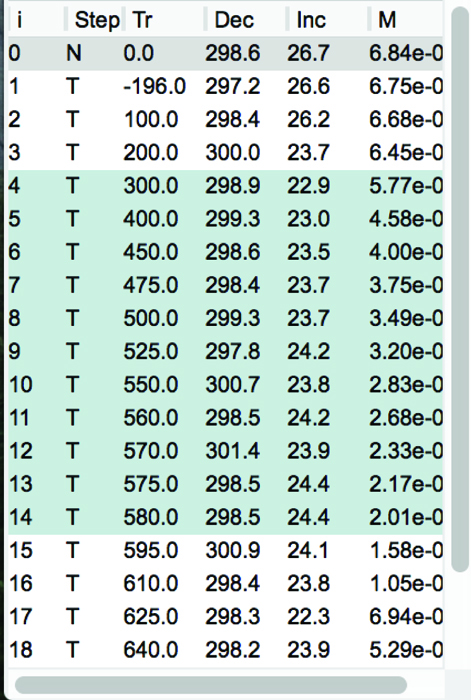{kind=link}
Finally, you can select the bounds of an interpretation directly off the Zijderveld plot by hovering your mouse over a measurement (should change to a hand shape) and double clicking.
When first created, the fit will be given a generic name such as Fit 1. The name of the fit can be changed from the default by typing into the drop-down box containing fit name. The default fit type is a least-squares line. You can choose different fits, such as a line anchored to the origin or a plane, by using the drop-down menu in the ‘Interpretation Type’ box. Plane fits can be plotted as either poles, full planes, partial planes, best fit vectors, or best fit vectors and full plane (
Note:
plane poles will be displayed as squares and best fit vectors will display as sideways triangles on
). This display option can be changed in the second drop-down menu in the ‘Interpretation Type’ box.
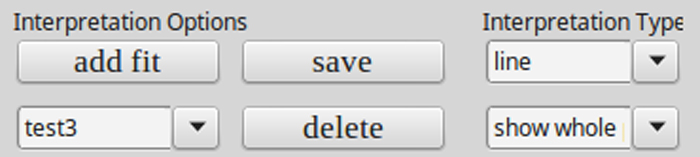{kind=link}
The properties of the currently selected fit to the data can be seen in the upper center of the GUI in a box labeled ‘Interpretation Directions and Statistics’.
Flagging Bad Measurement Data#
Due to flux jumps or other such errors, individual measurements should sometimes be excluded from interpretation. Such measurements can be flagged as “bad” by right clicking them within the measurement list and the measurement will then be highlighted in red. Additionally, you can double right click on the point you want to make bad in the Zijderveld plot to toggle it bad. The measurement_flag in the magic_measurements file will be change from “g” to “b” when a measurement is marked as bad the step will not be included in fits that are made to the data. Any measurement marked as bad will be colored red in the step list and will be shown as an empty rather than filled circle on the Zijderveld, equal area and M/M_0 plots. To change a bad measurement back to being good, one can right click on it again. Upon doing so, the red highlighting will go away, the data will be shown colored in within the plots and any fit that spans that data point will be recalculated to include it.
Acceptance criteria can be set by using the menu option [Analysis] \(\rightarrow\) [Acceptance Criteria] \(\rightarrow\) [Change Acceptance Criteria]. These criteria will be written to a criteria.txt table. These criteria can then be used to exclude interpretations that fail checks against this criteria during export.
Plot Interface#
The four plots that take up the majority of the center of the GUI are where data and their interpretations are displayed. All plots are initially set to zoom mode and this is signified by a cross shaped cursor when you mouse over them. To zoom simply click and drag the rectangle to the desired area. You can switch to pan mode by right clicking on any one of the graphs and then clicking and dragging will pan around the plot. Finally, to return to the original plot zoom level and position simply click the middle mouse button to return home. Note: In the absence of a middle mouse button pressing both right and left mouse buttons at the same time works on most laptops. In the case of Mac laptops, clicking with two fingers may work. If it doesn’t, you will need to switch to a different specimen or change the interpretation bounds to cause the figure to reload.
On the Zijderveld plot you have the additional option to select the current interpretation’s bounds by double clicking on a measurement point. You can also double right click on a measurement point in the zijderveld plot to mark it bad (this second option may not work on all systems).
On the equal area plots, both for the specimen and high level means, you can double click on any interpretation to switch to that specimen and interpretation immediately.
Saving Specimen Interpretations#
Once you have picked out your interpretations, you can save the session data in two different ways: (1) as a .redo file which will allow you to have the fits preserved to be view again with Demag GUI or (2) as MagIC tables (at the specimen/sample/site levels) to be uploaded to the MagIC database or otherwise processed. In addition, you may save image files of the plots.
The .redo File:#
You can use the menu option [File] \(\rightarrow\) [Save current interpretations to a redo file] to create this file type, you can just click the save button next to add fit, or you can use the hotkey ctrl-s. The advantage of the .redo file type being that it is designed to save your place when analysing a large dataset. Loading a redo file will reload all interpretations previously created any special colors assigned to them and take you to the specimen you saved the redo file on allowing you to pick up where you left off. Note: This file type does NOT load previous interpretations on start up you must go to the menu option [File] \(\rightarrow\) [Import previous interpretations from a redo file] (hotkey: ctrl-r) to restore your previous session.
The MagIC Tables:#
By going to the menu [File] \(\rightarrow\) [Save MagIC Tables] you can export your interpretations made in Demag GUI to the MagIC tables which can then be used by other MagIC programs or uploaded to the MagIC database. You can export any or all of the three coordinate systems upon selecting this option and you may choose to save samples and sites tables in addition to the specimens table that is output. If you choose to output additional information you will be prompted by a pop up window for additional information. Note: This save format loads on start up of the GUI immediately restoring your interpretations. Selection of this option will overwrite your demag_gui.redo file in the working directory.
Images of Plots:#
Select the menu option [File] \(\rightarrow\) [Save plot] \(\rightarrow\) [Save all plots] to save all plots, or you can save any of the plots individually. If you zoom or pan any of the plots the shifted image will be saved, not the originally plotted image (although the plot will redraw and reset to the original image in the GUI).
Flag Specimen Interpretations Good or Bad#
You can flag the current specimen interpretation (marked by large diamonds on all plots) good or bad by using the menu option [Analysis] \(\rightarrow\) [Flag Interpretations]. The list of interpretations in the interpretation editor tool of Demag GUI can also be used to toggle interpretations good or bad in the same way that measurements can be marked good or bad in the measurement list, by right clicking on the entry you want toggled. This will change the shape of the interpretation to a small diamond on all plots, remove it from use in any higher level means, and mark the entry result_quality ‘b’ instead of ‘g’ to signify this.
Sample Orientation#
You can check sample orientation by using the menu option [Analysis] \(\rightarrow\) [Sample Orientation] \(\rightarrow\) [Check Sample Orientations] (hotkey: ctrl-o). This function will set your mean options to fisher of all components at the current site level and display the wrong arrow (up triangle), wrong compass (down triangle), and rotated sample for declanation incraments of 5 degrees (dotted circle). This allows you to check if the sample orientation is correct and thus can be used in analysis. If you determine the current sample orientation to be bad you can mark it as such using the menu option [Analysis] \(\rightarrow\) [Sample Orientation] \(\rightarrow\) [Mark Sample Bad] (hotkey: ctrl-.). This will change the sample_orientation_flag in the er_samples file to b not g and will prevent you from marking the specimen interpretations good in that sample so you do not use the improperly oriented data in your final results. If you later realize this was a mistake you can mark the sample orientation good again using [Analysis] \(\rightarrow\) [Sample Orientation] \(\rightarrow\) [Mark Sample Good] (hotkey: ctrl-,). Finally, to turn off the check sample orientations data simply select the [Check Sample Orientations] option again and it will be removed. Note: The current sample is specified as the sample of the current specimen.
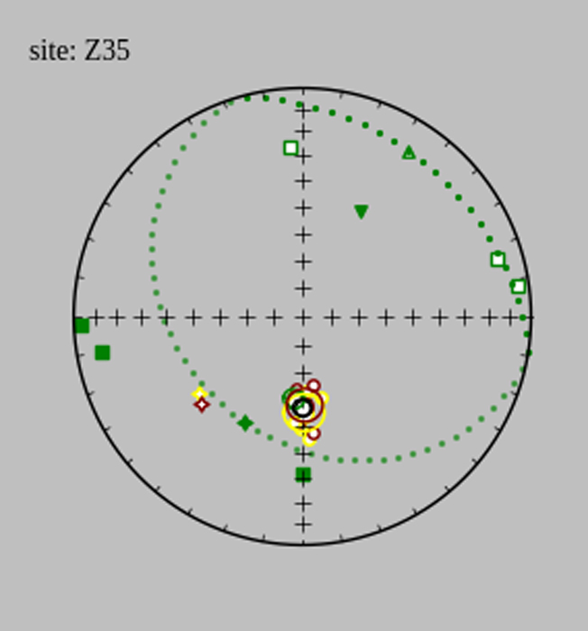High Level Means Plot and Statistics#
The set of drop-down boxes to the right of the interpretation data are there to determine what level you want to analyse in the high level means plot and are grouped into the Display Level and Mean Options boxes.
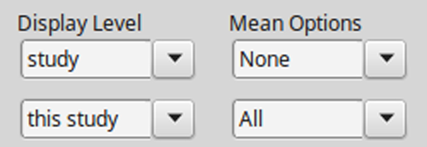The Display Level boxes consist of the upper drop-down menu which allows you to select the level at which interpretations are displayed options being all interpretations in the current: sample, site, location, or study. The lower drop-down menu lets you select the current sample, site, location, or study.
The top drop-down menu in the Mean Options box lets you chose what kind of mean you would like to take of the specimen components currently displayed. The lower drop-down menu lets you pick which specimen components to display allowing you to display All components, No components, or any single component.
The mean statistics for the chosen high level mean are displayed in the lower right of the GUI and can be cycled through using the arrow buttons next to the statistics boxes in the case of multiple high level means.
It is possible to toggle on and off displaying any one of the means in the high level plot which can be useful in the case of a cluttered graph of all components. This can be done by going to the menu option [Analysis] \(\rightarrow\) [Toggle Mean Display] and selecting the name of the component you would like to toggle.
All interpretations marked bad will appear as small diamonds regardless of type on the high level mean plot. The below gives examples for a number of plane display options of bad interpretations (the symbols off to the side), best fit vectors to the means (sideways triangles), plane poles (squares), and the planes themselves.
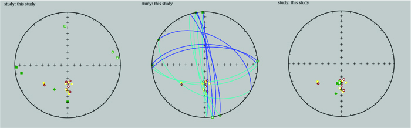Interpretation Editor#
In order to more easily view and edit specimen interpretation data there is a specimen interpretation editor which can be launched using the menu option [Tools] \(\rightarrow\) [Interpretation Editor] (hotkey: ctrl-e). Note: If you would like more help than provided here the interpretation editor has in context help same as the main GUI, see additional help for details.
List of Interpretations:#
This panel contains a list which details the fits made to the data and their parameters from which you can select which interpretation to view by double clicking it. In the list, the currently selected interpretation is highlighted blue as shown in the image below. You can mark interpretations as bad which removes them from any Fisher means or other high level means by right clicking on their entry in the list. All interpretations marked bad are colored red in the list and marked as a small diamond on the plot. The specimen entry associated with this fit will be given a bad (‘b’) flag within the specimens table. You can search through interpretations by using the search bar above the list. Finally, interpretations can be highlighted by clicking on the list and holding the shift or ctrl/command key to select multiple interpretations.
Additional High Level Means Options:#
The interpretation editor also allows the displaying of site and sample means as the primary points on the high level mean plot by changing the bottom left display options drop-down box. The program does not yet allow taking fisher means of sample means or site means, so the mean type box will be forced to read ”None” if this option is changed from specimens.
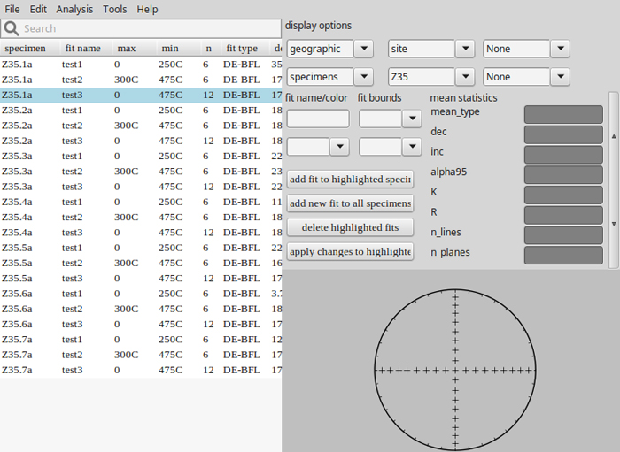VGP Viewer#
Another tool offered by Demag GUI is the VGP (Virtual Geomagnetic Pole) Viewer which allows you to view your VGPs before exporting to MagIC tables. Note: this is not available in the standalone executables.
The VGP viewer can be opened by using the menu option [Tools] \(\rightarrow\) [View VGPs] (hotkey: ctrl-shift-v). The viewer requires latitude and longitude data for sites and locations in order to calculate all VGPs from specimen interpretations, if this data is not already contained in the MagIC tables imported when the GUI started then it will be asked for during calculation so have it ready. The VGP viewer allows you to select viewing samples, sites, or location VGPs from the drop-down menu at the top. Plot interactions are the same here as in the main GUI and can be zoomed, panned, and points selected in the same manner. The list on the left shows all the data for the currently displayed VGPs.
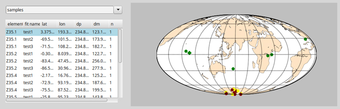Current Warnings Box#
The white box in the far top right of the GUI is there to provide relevant warnings about aspects of the current specimen and interpretation such as missing data or duplicate data and can be useful in debugging and analysis.
Additional Help#
Finally, if you need more help working with Demag GUI it offers in context assistance with the menu option [Help] \(\rightarrow\) [Usage and Tips] (hotkey: ctrl-h) which will change your cursor and then let you click on whichever aspect of the GUI you want help with. In most cases, a yellow pop-up box with information will appear, altough not all features have information.
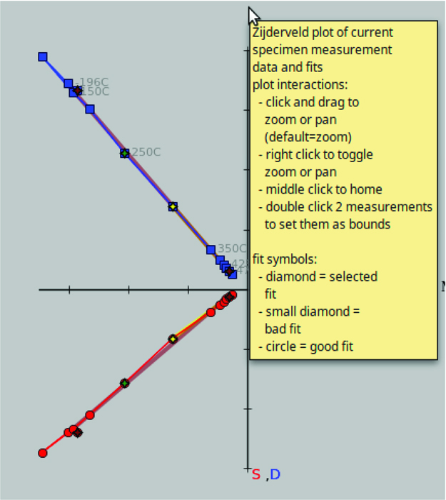